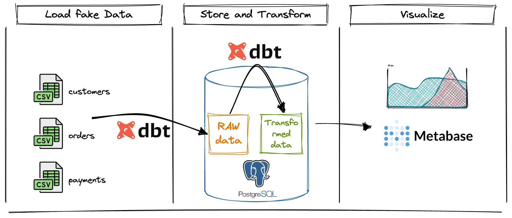
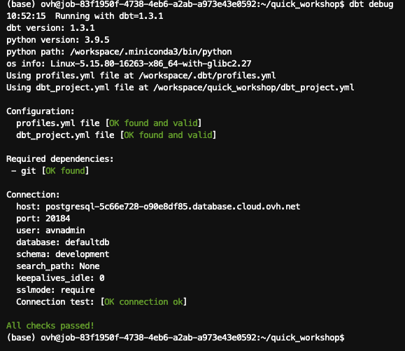
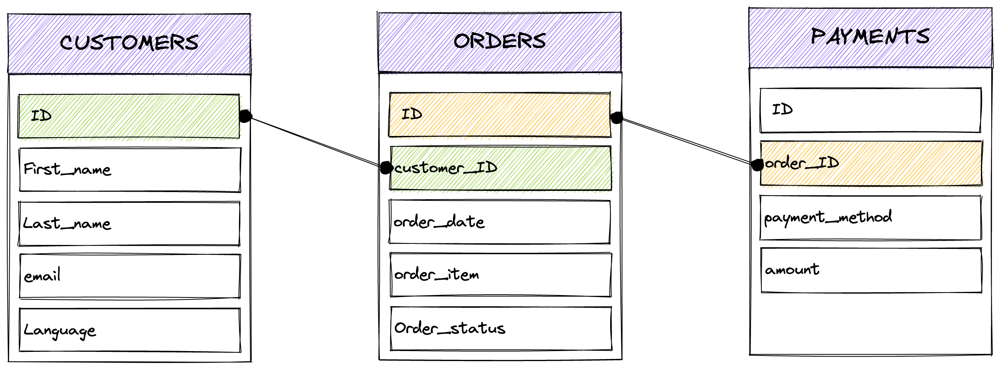
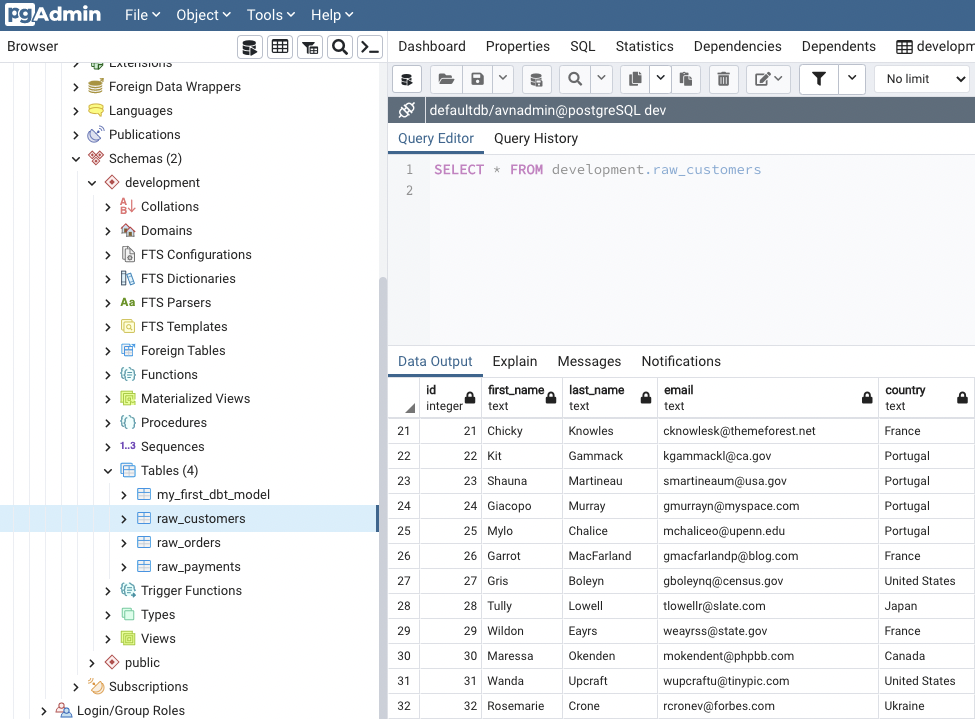
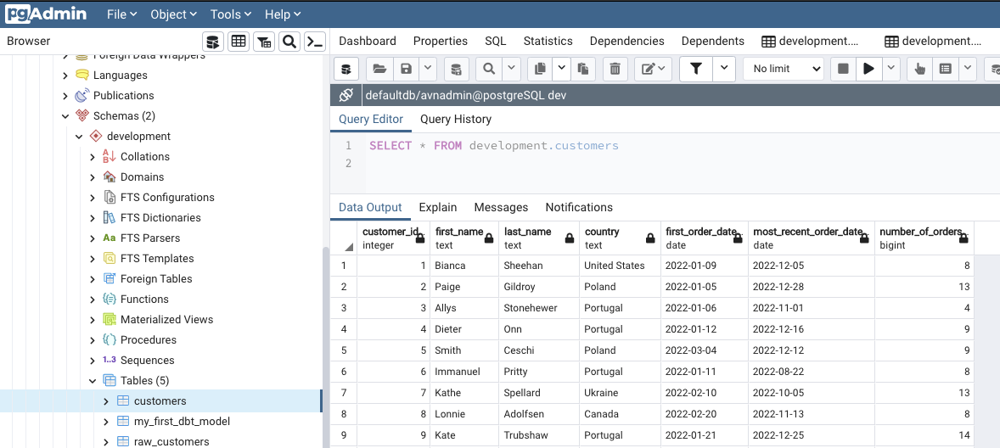
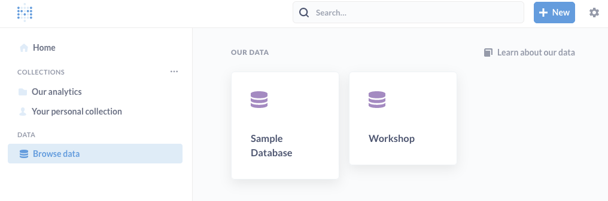
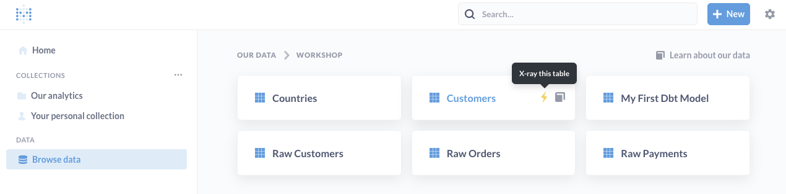
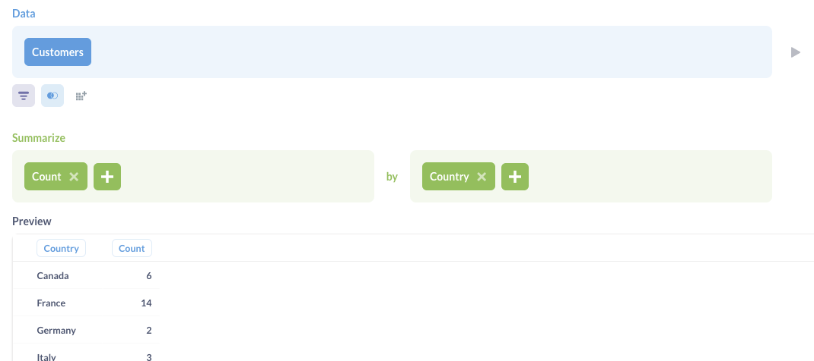
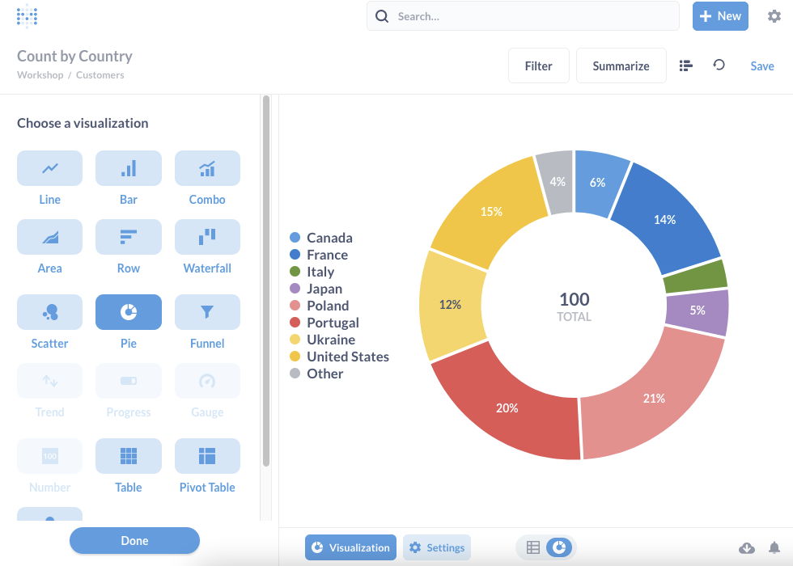
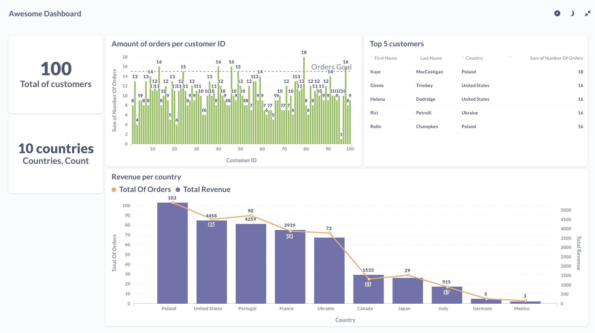

DBT + PostgreSQL + Metabase workshop : a first analytics platform
Basic workshop to build a first modern analytics platform with DBT, PostgreSQL and Metabase.
Hello! What are we going to do tonight, Brain?
Discovering awesome open source data tools
Initial goal is to have fun discovering some of most notorious modern data tools, with a typical use-case : analyze your orders and customers.
Over the years, DBT has trusted the charts as the “transformation workflow” tool, same for Metabase as business intelligence tool. They work pretty well together, and are seen in many production architectures.
The last piece of data software that we will discover is PostgreSQL, who will act as a datawarehouse.
While CLickHouse, Google BigQuery or Snowflake might have been excellent choices for a production platform, I selected PostgreSQL because it can be installed locally with zero expenses, and is a perfect fit for our standard needs.
The pipeline that we will create is similar to this schema:

Building your first analytics platform
Over this workshop, you will get a first introduction to DBT and Metabase features.
Our use case is quite simple: we are a company, with customers, orders and payments.
We want to build nice visualization dashboards, to monitor closely our activity.
More than dashboards, we want to avoid black magic, avoid technical debt, and for that we will use DBT to introduce best practive for analytics.
What this workshop is not : it’s not an intensive worshop for experts, neither something to follow for best practices (it’s more the opposite since we will skip few phases like Git synchonization, DBT, tests).
Time and cost
Expected time for this workshop : it depends of your skills. If you are new to the cloud, let’s say 4-5 hours.
If your have cloud/tech experience, ±2 hours.
Cost : free if you run everything locally.
In the cloud, more or less 3 euros for 24h in OVHcloud:
-
AI Notebook (DBT host): 24h x 0,03 € = 0,72€
-
PostgreSQL managed database: 24h x 0,07€ = 1,68€
-
VM instance (metabase host): 24h x 0,0088€ = 0,021€
Ready? See you in few hours!
Part 1: setup your environment
Requirements
-
A Python >= 3.8 environment with ability to install new packages such as DBT
-
A PostgreSQL client to query a PostgreSQL database (like psql or PgAdmin)
-
Ability to run Docker images (locally or in the cloud) or execute JAR file (for Metabase installation)
-
basic technical skills such as building a SQL query, connect with SSH, …
Cloud or not cloud? Chose wisely!
As mentionned in requirements, this workshop will require to install few things such as DBT (Python package), a PostgreSQL client and Metabase (Docker image for the easiest installation way).
You can opt to install everything locally on your computer if you have enough access rights to do it.
You can also prefer to use cloud products such as virtual machines or Python Notebook.
The main advantage for this method is the ability to start with a clean development environment, and be able to delete safely everything at the end. Also, if you don’t have admin on your own computer, it will be easier.
On the dark side, it can be seen as a bit complex if your are new with cloud. So, chose wisely!
For the next step, we will go for cloud products with OVHcloud, a european cloud provider:
-
Database: OVHcloud PostgreSQL (AWS doppeldanger : RDS for PostgreSQL)
-
DBT: installed in a OVHcloud Jypter Notebook (AWS : Sagemaker Notebook)
-
Metabase: installed in a OVHcloud virtual Machine (AWS : EC2 VM)
From an architecture perspective, it will look like this in the cloud:

Step 1 : (optional) prepare a cloud Python environment
ℹ️ As explained previously, we will use cloud products in this workshop. It’s optional, you can skip this step if you prefer to use your own Python environment (your computer for example).
This workshop needs a Python environment, with the ability to browse files easily.
To be more visual and practical, we will opt for a Python notebook code editor. Most used ones in the world are JupyterLab and VSCode. We will create one in the cloud now.
If required, create an OVHcloud free account or log in:
-
Log in OVHcloud control panel : <https//www.ovhcloud.com>.
-
Go to Public Cloud section in the top menu.
-
Create a new project if required.
Once your project is created, create a new AI Notebook with these parameters:
-
name: dbt-notebook
-
code editor: Jupyter lab
-
Framework: Miniconda with python >=3.8
-
Privacy: public access (anyone will have access to it. useful for a workshop, NOT recommended for production or sensitive information)
-
Datacenter: as you wish
-
Resource: CPU x1
-
Attach a git repo or data container: no
-
SSH key: no
Once your notebook is running (it should take less than 1 minute), you can access it by clicking on JupyterLab button.

This notebook is a Linux environment running inside a Docker image. It gives you the ability to live code directly in your web browser. You can install additional package swith classic Python commands such as pip installand conda install.
Also, you can share your environment with someone else just by sharing your notebook URL. Very useful during a workshop session when you need some help 😉.
Now, click on the Terminal icon inside this notebook.

Step 2 : check your python environment
This tutorial requires Python >= 3.8.
To check your current Python environment, type in a terminal:
$ python --version
Python 3.9.5
Mine is on version 3.9.5. If you have a deprecated version, please upgrade it at least to >=3.8.
💡 A best practice is to create a new python environment with Conda. In this workshop, we will not since we are creating a new linux environment that we will trash just after. But feel free to do it, especially with local installation.
Step 3 : set up a PostgreSQL cluster
For this workshop, we will use a PostreSQL cluster to store and transform our data.
PostgreSQL is an open source and community-based transactional database management system, widely used accross the world. Perfect for a workshop but also for production. It has not the flexibily of modern lakehouse such as Snowflake or BigQuery (compute and storage are linked for example, and information is stored in row format, not columnar) but can be relevant in many Business Intelligence use-cases where performance is not the main criteria.
To setup a new cluster, two solutions:
-
Use a managed Cloud Product such as OVHcloud for PostreSQL (paid).
-
install yourself a PostgreSQL somewhere (eg. your computer, free).
Option 1 : launch an OVHcloud PostgreSQL cluster
We will go for a cloud product here:
-
Go to OVHcloud control panel.
-
Go to Public Cloud section in the top menu.
-
Select your project or create a new one.
If the left menu, select Databases then create a new one with these parameters:
-
Database type: PostgreSQL 14
-
Plan: Essential (1 node)
-
Region: as you wish
-
Size of nodes: smallest one, like DB1-4
-
Options / Network: Public network (open to internet access)
Launch this database cluster.
Once this cluster is up and running, you will have to configure users and authorized IPs.
Go in Users tab, and create a new user. Copy his username and password safely.
Now go in Authorized IPs and add the IP 0.0.0.0/0.
It’s a wildcard allowing any IP in the world.
❗️ a Wildcard is useful for a workshop or troubleshooting, but not recommended at all for production. Anyone will be able to contact your cluster.
Option 2 : manual installation (self-hosted)
If you opt for a manual installation, follow official instructions here: https://www.postgresql.org/download/.
This workshop was tested with PostgreSQL 14.
Once installed, configure a new database.
You can find alternative websites with detailled tutorials like https://www.postgresqltutorial.com/postgresql-getting-started/ to guide you through the steps.
Part 2: Setup DBT
Great! OVer the part 1, we setup a Python environment and a datawarehouse.
It’s now time to install the first data software, DBT!
What the hell is DBT ?
Good question! DBT is the acronym of Data Build Tool and was created in 2016 by some folks of RJMetrics.
Here is quote from their official website: dbt is a transformation workflow that helps you get more work done while producing higher quality results. You can use dbt to modularize and centralize your analytics code, while also providing your data team with guardrails typically found in software engineering workflows. Collaborate on data models, version them, and test and document your queries before safely deploying them to production, with monitoring and visibility.
DBT is an answer to all team facing analytics issues. Who made a change on this query?. Where can I find explanation about this data? How can i rollback to the queries made 1 week ago? How can I test safely before running is in production?. You see what I mean. Artisanal mode.
If I try to sum-up, with data analytics your start with multiple data sources and end up with results, like reports or dashboard. Between sources and results, the workflows you put has to be structured, documented, collaborative, and shared safely.
We already do that widely for software. If you develop a software, you will push you code on Git, collaborate with branches, do some versioning, document you code directly, build CI/CD pipelines, …
Why not doing the same with data analytics ? Software engineering is here since long, now let’s embrace analytics engineering!
DBT is one of the answer :) Don’t hesitate to read more with the DBT viewpoint.
Install DBT
💡 check official documentation for complete guidance : https://docs.getdbt.com/docs/get-started/installation.
DBT comes in two versions:
-
DBT Core, that you can install yourself as self-hosted. It’s free and open source.
-
DBT Cloud, where you will get a managed version of DBT, with more features. It’s a paid plan.
We will install DBT Core in our case.
Since we will use DBT with PostgreSQL, we will install DBT Core and DBT PostgreSQL connector at once.
Go in you Python terminal and type:
# Update PIP to the latest version
$ python -m pip install --upgrade pip
(...)
# Install DBT Core and DBT PostgreSQL connector at once
$ pip install dbt-postgres
(...)
# Verify versions
$ dbt --version
Core:
- installed: 1.3.1
- latest: 1.3.1 - Up to date!
Plugins:
- postgres: 1.3.1 - Up to date!
Create your first project
DBT works with projects, containing your configuration, SQL models, and much more.
Create your first one with DBT init:
$ dbt init quick_workshop
09:47:12 Running with dbt=1.3.1
09:47:12 Creating dbt configuration folder at /workspace/.dbt
Which database would you like to use?
[1] postgres
(...)
Your new dbt project "quick_workshop" was created!
2 new folder appeared in your directory, Logsand quick_workshop.
Move to this project folder with your terminal:
# Go to new project folder
$ cd quick_workshop
# list content files
$ ls
README.md analyses dbt_project.yml macros models seeds snapshots tests
Congrats, your first project is created!
Quick descriptions about these directories:
| Directory | Description |
| — | — |
| analyses | where you can compile SQL queries, more often for later usage as analytical queries |
| macros | blocks of code that you can reause multiple times |
| models | where you put your code. 1 file = 1 model, and you code quite often transform raw data in datasets or intermediate trandsformations |
| seeds | Static CSV data that you can load via DBT |
| snapshots | when you capture the state of your data tables, to refer to it later |
| tests | SQL/Python tests you can run to validate your data or models. |
When you initialize a DBT project, there is also the file dbt-project.yml, which contains useful parameters.
A name, a version, models to build but also a profile to use.
As explained before, DBT does not process data itself. There is no compute, no “power”. DBT is linked to something doing transformation tasks. Most famous ones are PostreSQL, BigQuery, Snowflake, Spark, …
Here in profile, you can redirect this project to a profile to use.
Keep it like the screenshot aka quick_workshop.

Connect DBT to your PostgreSQL cluster
DBT connects to your datawarehouse using a profile, which is a .yml file created during our first project init. You were notified about his creation during the dbt initin the previous step, and his directoy path were also shown.
Let’s edit this file:
-
Open your Python terminal.
-
Open your profile file, in our case it’s in
/workspace/.dbt/profiles.yml.
# Open profile.yml with your preferred code editor such as Vim/nano/...
$ nano /workspace/.dbt/profiles.yml
By default, your profile should look like this:
quick_workshop:
outputs:
dev:
type: postgres
threads: [1 or more]
host: [host]
port: [port]
user: [dev_username]
pass: [dev_password]
dbname: [dbname]
schema: [dev_schema]
prod:
type: postgres
threads: [1 or more]
host: [host]
port: [port]
user: [prod_username]
pass: [prod_password]
dbname: [dbname]
schema: [prod_schema]
target: dev
Replace values with your PostgreSQL cluster informations.
In our case, with an OVHcloud PostgreSQL cluster:
quick_workshop:
outputs:
dev:
type: postgres
threads: 4
host: postgresql-5c66e728-o90e8df85.database.cloud.ovh.net
port: 20184
user: bastien
pass: hmTiDdN0y*********
dbname: defaultdb
schema: development
sslmode: require
prod:
type: postgres
threads: 4
host: postgresql-5c66e728-o90e8df85.database.cloud.ovh.net
port: 20184
user: bastien
pass: hmTiDdN0y*********
dbname: defaultdb
schema: production
sslmode: require
target: dev
Notice few things :
-
You can get a development and a production environment, or even more. Here, in the target, we ONLY interfact with dev.
-
You can differenciate the schemas used if you want to. We did it there, with the same database clsuter BUT two schemas.
-
SSL mode is required for OVHcloud services, but not if you are running PostgreSQL locally.
-
1 thread means no parralelization of task. Default is 4. it mean DBT will run 4 jobs in parralel.
A best practice is to fully separate development and production environnment.
First to avoid human mistakes such as data deletion, but also to isolate compute resources.
Having an splitted dev platform will allow you to run intensive queries without being scared to “disturb” production performances.
Save this configuration and close this profile.yml file.
Test your environment
First, run a debug:
quick_workshop$ dbt debug

If all checks have passed, we are good! DBT is able to find your configuration and able to connect to PostgreSQL.
Perform a first dummy DBT run
During the project initialization, DBT pushed examples inside the models folder.
When your perform a DBT run, DBT looks for models inside this folder and will run them.
💡 if you go back to the pevious step, you will notice at the end of your
dbt_project.ymlconfiguration that we asked to build models inside /models/examples.
Perform your first run:
quick_workshop$ dbt run
(...)

As shown in the result, 2 models were completed successfully.
These models are dummy ones. You can check what’s inside by browing into /models/examples and open the .SQL files.
In short, the first SQL model will perform a SELECT on a fake source data, and the second DBT model will perform a SELECT on top of the first SQL model.
The good thing is, DBT is able to materialize results. so you can reuse your results easily (like, hmmm, for BI reports maybe ?😉). It was the case for these two models.
The major materialization are viewsand second ones are tables.
A view can be seen as a virtual table. every time you ask for it, the model is rebuilt. It does not store data in your datawarehouse but will virtually aggregate information to create something to view.
A table will create a real table in your datawarehouse. You wrote something on disks.
Both have pros and cons, and the power of DBT is that you can specify this materialization directly in your models.
As an example, if I select table here is what i can see inside my PostgreSQL cluster now:

Now that we runned our first DBT run, let’s build our own models!
💡 More information and more materialization options are available with DBT: https://docs.getdbt.com/docs/build/materializations.
PART 3: ingest data (badly)
Well done! You DBT project is now ready to be used. Time to play with data!
💡 Usually you don’t need to bring fake data like this, because you already have something. But hey it’s a workshop :smik:. If you want to extend this workshop, I recommend to ingest data with open source tools such as Airbyte or Meltano. Both can also be self-hosted or provided as SaaS offers.
About DBT and seeds
DBT allows CSV data ingestion, called seeds (remember the seeds folder?).
Best practive is to use seeds when you need to control static and versionned data.
Imagine that you are running everytime the same analysis for your business, but you want to exclude a list of 20 internals account. How ? Well, by using seeds.
Seeds workflow is:
-
add CSV files into your quick-workshop/seeds/ folder.
-
run the
dbt seedcommand -
CSV files are loaded as tables inside your datawarehouse.
-
if you modify your CSV by adding lines, the tables will be updated during the need
dbt seed.
💡 More information and more options: https://docs.getdbt.com/docs/build/seeds. For example you can modify the
seedsdefault directory, or specify a column datatype instead of betting on autoselection.
Ingest fake data
ℹ️ For easiness, this fake data is inspired from official dbt example called
jaffle_shopbut with extra columns for better use-cases with Metabase (more fields, and more lines). Full credits goes to this official DBT example repository.
For this workshop, we will tweak the use of seed to import fake data.
Download the fake data provided in this workshop Github repository.
It consist of 3 CSV files, wike fake data (generated with www.Mockaroo.com).
From a entity relationship diagram (ERD) point of view, data is linked like this:

Copy these CSV files inside the quick_workshop/seeds folder.
Now run a DBT seed:
quick_workshop$ dbt seed
14:38:29 Running with dbt=1.3.1
14:38:29 Found 2 models, 4 tests, 0 snapshots, 0 analyses, 289 macros, 0 operations, 3 seed files, 0 sources, 0 exposures, 0 metrics
14:38:29
14:38:30 Concurrency: 4 threads (target='dev')
14:38:30
14:38:30 1 of 3 START seed file development.raw_customers ............................... [RUN]
14:38:30 1 of 3 OK loaded seed file development.raw_customers ........................... [INSERT 100 in 0.31s]
14:38:30 2 of 3 START seed file development.raw_orders .................................. [RUN]
14:38:32 2 of 3 OK loaded seed file development.raw_orders .............................. [INSERT 1000 in 1.72s]
14:38:32 3 of 3 START seed file development.raw_payments ................................ [RUN]
14:38:33 3 of 3 OK loaded seed file development.raw_payments ............................ [INSERT 1000 in 1.36s]
14:38:33
14:38:33 Finished running 3 seeds in 0 hours 0 minutes and 3.66 seconds (3.66s).
14:38:33
14:38:33 Completed successfully
14:38:33
14:38:33 Done. PASS=3 WARN=0 ERROR=0 SKIP=0 TOTAL=3
Data is now imported! Created inside 3 tables into your datawarehouse.
when taking a look with a PostgreSQL client like PgAdmin, you can see three new tables :

Data is loaded, it’s now time to generate analytics-ready views and tables!
Part 4: transform data with DBT models
The current data is exhaustive but splitted in multiple tables.
You have the users, the orders, the payments.
How can you get more actionable views? for example:
-
for each customer, a total amount of orders.
-
the last order from each customer.
-
revenues per country.
-
…
Without DBT, you can get those answers with classic SQL syntax, directly by querying PostgreSQL
It will work fine. But wait.
Imagine that you don’t have one query but a dozen one, nested together like pipelies (first anonymize data, then remove fraud, then calculate revenues, …) not punctually but with recurrence, with vast amount of data, share your method globally and with control, with versionning, tests, generated documentation and co?
That’s when DBT is relevant, bringing you transformation workflows and control over SQL queries or Python code.
Create your first SQL model
Browse your quick_workshop/models/ directory.
Delete the example folder, not required anymore.
Create a new file named customers.sql. Open this file and copy the code below:
with customers as (
select
id as customer_id,
first_name,
last_name,
email,
country
from {{ ref('raw_customers') }}
),
orders as (
select
id as order_id,
customer_id,
order_date,
order_item,
order_status
from {{ ref('raw_orders') }}
),
customer_orders as (
select
customer_id,
min(order_date) as first_order_date,
max(order_date) as most_recent_order_date,
count(order_id) as number_of_orders
from orders
group by 1
),
final as (
select
customers.customer_id,
customers.first_name,
customers.last_name,
customers.country,
customer_orders.first_order_date,
customer_orders.most_recent_order_date,
coalesce(customer_orders.number_of_orders, 0) as number_of_orders
from customers
left join customer_orders using (customer_id)
)
select * from final
Save this file.
Few explanations about this code sample:
-
we start by selecting few columns for the Table “raw_customers”.
-
We do the same from the table “raw_orders”
-
We then create new columns, respectively the first order date, the most recent, and the total or orders
-
we build a final query regrouping columns from multiple parts.
-
finally we select everything (*) fron this query.
-
SQL info : the coalesce() function give you the first
NOT NULLresult. so here ifnumber_of_ordersis null, it will replace it by zero to avoid empty cells.
Reconfigure your project
During DBT project initialization, DBT was configured to run models only from /example directory.
Current configuration inside dbt_project.yml:
models:
quick_workshop:
examples
+materialized: table
Since we deleted the quick_workshop/models/examples directory, we have to modify this part.
Modify the file dbt_project.ymland put this new configuration instead:
models:
quick_workshop:
materialized: table
It will now take into account our SQL files pushed at the root of quick_workshop/models.
Run DBT
Now let’s run DBT. It will browse the quick_workshop/models directory:
quick_workshop$ dbt run
10:24:53 Running with dbt=1.3.1
10:24:53 Found 1 model, 0 tests, 0 snapshots, 0 analyses, 289 macros, 0 operations, 3 seed files, 0 sources, 0 exposures, 0 metrics
10:24:53
10:24:53 Concurrency: 4 threads (target='dev')
10:24:53
10:24:54 1 of 2 START sql table model development.customers ............................. [RUN]
10:24:54 1 of 2 OK created sql table model development.customers ........................ [SELECT 100 in 0.11s]
10:24:54
10:24:54 Finished running 1 table model in 0 hours 0 minutes and 0.56 seconds (0.11s).
10:24:54
10:24:54 Completed successfully
10:24:54
10:24:54 Done. PASS=1 WARN=0 ERROR=0 SKIP=0 TOTAL=1
Model was run successfully and table also created.
Check the result in your datawarehouse
What we are waiting for, is a new table created in our datawarehouse, countaining our aggregated data.
Good news this is exactly what we have 😉.

Exercise 1: build another DBT model 😉
Now that we discovered a bit more how DBT works, let’s try to build another model yourself.
Our Marketing team would love to target more accurately some geographical areas, and want to create a country dashboard.
You have to create a new table in our datawarehouse, analyzing revenues per country.
Also, we only want to summarize revenues for orders where status is true (meaning it’s paid).
The table columns should be like this:
| Country | Total of orders | Total revenue |
|---------|-----------------|---------------|
| France | 37 | 2530 |
| … | … | … |
Create this new table and save it inside quick_workshop/models/countries.sql.
💡 Hint: required data is splitted into three tables (customers, orders, payment). Time to learn about SQL JOIN 😉.
If you are blocked, you can find the solution in this Github repository, in the exercises folder.
Exercise 2: remove suspicious accounts
Our Data team is convinced that we need to remove all emails ending with @facebook.com, because 100% of the time it’s fraudulous accounts.
The goal here is to skip some irrelevant data that are ingested regularly.
They also told us that they are investigating, but other emails system will have to be banned in the future.
How do you proceed ?
Same, if you are blocked, a solution can be found in this repository!
Generate documentation
Let’s get back to the topic of building a first BI Platform.
What the point of having data tables without a clean documentation? None. Over time, a good documentation is key.
Code commenting is a best practice in software development, data and queries documentation should also become an acceptence criteria for analytics engineering.
What if we could generate documentation on the fly and serve it to everyone, for, by example, spread it to the data team?
Good news it’s included in DBT! It provide few things:
-
Ability to document your models directly in your repository (inside your models files, but also in separated documents)
-
Ability to generate a clean HTML documentation
-
Ability to serve this documentation on a web server.
💡 More information about documentation: https://docs.getdbt.com/docs/collaborate/documentation
Go back to your Python terminal and type:
$ dbt docs generate
(...)
$ dbt docs serve --port 8001
Your documentation is now generated as HTML, and hosted!
Generated files are pushed inside quick_workshop/target.
If you are running DBT locally, go to http://localhost:8001.
If you are using OVHcloud AI Notebook, it support port forwarding. Take the link of you notebook and add the port in the URL as shown below :
URL example : https://f746650a-e99c-4ab5-b7e4-5d79c32cb134.notebook.gra.ai.cloud.ovh.net/lab/tree/quick_workshop
Access port 8001: https://f746650a-e99c-4ab5-b7e4-5d79c32cb134-8001.notebook.gra.ai.cloud.ovh.net

That’s a one small step for man, but…
Congrats, you now had a first model running, humbly trying to detail few DBT features.
Typical DBT workflows includes more than one source of data, quite often dozens of models, creating views, tables, and all of them are nested together. With DBT test, and DBT macros, CI/CD, and Git synchronization.
Again, you can see it as software develooment best practices, but ported to analytics code. No more no less!
The DBT part is over for this workshop. The last part will engage data visualization!
Part 5 : Visualize your data with Metabase
Why Metabase is so cool ?
Similarly to DBT, Metabase is an open source software provided as a paid cloud version or free self-hosted.
Metabase is awesome in multiple ways. It can be defined as a BI tools, with two main part :
-
A query tool, with wysiwyg editor and SQL query support.
-
A dashboard tool, with a well polished and intuitive interface.
Metabase does not store your data, but they will store your queries syntax and metadata required to build your dashboards. I guess that the name meta(data)base comes from this point 😉.
By default, for the self-hosted version, they store this data inside a SQLite database but you can opt for your own SQL database as a backend (much better for production).
Install Metabase
For this tutorial, we will use the self hosted version.
Metabase can be installed from multiples ways, as explained in their official documentation: java JAR file, Docker image, or from source.
Option 1: install metabase with desktop JAR version
Metabase is proposed a a java file (JAR). If you computer has a Java Runtime >=8 (JRE), such as MAcOS or most Linux distributions, it’s the easiest way to try it.
Express guide :
-
download Metabase from https://www.metabase.com/docs/latest/installation-and-operation/installing-metabase
-
push it in a folder called for example “metabase”. because it will generate files
-
run it by double-click or type “java -jar metabase.jar” in a terminal to get logs (it it doesn’t work).
Option 2: Install metabase via Docker in the cloud
If you are more into Docker or Source installation, follow their official tutorials
https://www.metabase.com/docs/latest/
This is the option selected for this workshop on my side, by doing this:
-
I’m not admin on my professional laptop, so I launched an OVHcloud virtual marchine (instance).
-
Go in OVHcloud Control panel / Public Cloud / Instance / new
-
create a new instance, model Sandbox S1-2 (the cheapest) with latest Ubuntu (22.10 at the time) and public network (you need a SSH key)
-
Once Created, follow official Metabase instructions from their website documentation
If you followed official instrutions, shortly after installation you can connect to your metabase instance via <http://<your_ip>:3001> and be reidrected to the welcome screen.
Connect your datawarehouse to metabase
Metabase comes with a large choice of official data sources connectors, but also partners and community-based ones.
MySQL, PostgreSQL, MongoDB, BigQuery, Snowflake, Apache Spark, Google Analytics, … but also Hydra, DuckDB.
ℹ️ List of official connectors: https://www.metabase.com/data_sources/.
Once installed, click on Get started, fill the information and add a PostgreSQL source.
For an OVHcloud for PostgreSQL database, fill is at below (be carefull, SSL is in require mode):


If your connector is correctly configured, you should be able to browser you data through the left menu.
Metabase provides a sample database, and one that we called Workshop.

If you browse this data, you will eventually see all the table generated via DBT.
The ones with raw data, and the ones generated (customers and countries).
Metabase built a handy feature called X-ray (the lightning strike), generating automatically some reports about a specific table.
Try it with your customers table for example :

Build awesome dashboards
When you query you data, Metabase allows you to save your query and his visualisation.
A Dashboard is composed to saved visualisation and filtering options.
You can see a dashboard as virtual collection of previously-made visualizations.
So, you start by querying the data, then save the results and finally add them into dashboards.
Query your data
On the top right menu, click on the + NEWbutton and select Question.
Pick the /Workshop/customers/ data table. it will open a visual interface allowing you to filter, sort, limit your queries, as classic SQL queries. You also have advanced feature like SQL join, …
This interface is pretty straightforward, play a bit with the tool.
As an example, do a Count of rows by country, then click on the small Previewbutton on the right.

💡 on the
+ NEWbutton, you can also create a new SQL query via code editor. You can also create Metabase models, like in DBT. you have the ability to synchronize your DBT models and documentation with Metabase via extra python package such as dbt-metabase.
Add a visualization to the dashboard
Once your query fits your need, click on Visualize. on the left menu, you can modify visualization type and few settings.
Example:

Save your question when you’re satisfied ! Metabase will automatically suggest to add this question to a dashboard.
Exercise 3: build your first dashboard
Our sales team discovered your BI platform project. They would love a first dashboard with 4 informations. we don’t judge their relevancy here 😉 :
-
Total of customers we have.
-
Table with top 5 customers information.
-
Bar chart with orders repartition per customers.
-
Cascade chart with revenues and orders per country.
-
all of that with a dashboard filter, per country
At the end it should look a bit like this:

💡 If you have some issues with this exercise, you’ll find queries details in this repository, as always!
Done! You just built a first BI platform
High five! Thank you for following this workshop.
Initial goal was to discover awesome and open source data tools, how they work, and with a common use-case.
I do hope that this mission is completed!
Do hesitate to improve this repository directly (pull request), open an issue, or share your thoughts directly.
Feel free to contribute and give me your feedbacks via http://twitter.com/bastienovh/ .
Additional resources
-
Curated list of DBT resources: https://github.com/Hiflylabs/awesome-dbt
-
Official DBT workshop: https://github.com/dbt-labs/jaffle_shop
-
Official Metabase learn lessons: https://www.metabase.com/learn/